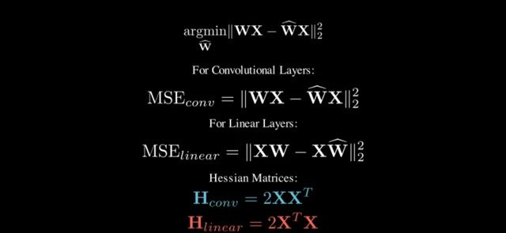
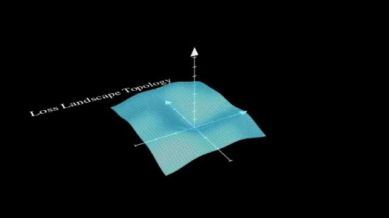
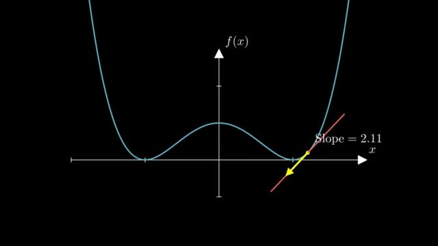
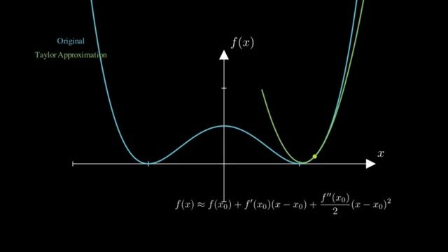

The Hessian update, and which X it expects
The previous note left two formulas unnamed: which weight to snap, and how to move the weights that are still free. Both come from a quadratic model of the layer error. The quadratic is the Hessian. The annoying part, and the part that stalled the video's author, is that the paper writes the linear layer as $WX$ and the Hessian as $2XX^{\mathsf T}$. A PyTorch linear activation is not shaped for that product unless you transpose it first.
Two layouts, two Hessians

The paper's objective is consistent inside its own convention. $W$ is $d_{\text{row}}\times d_{\text{col}}$, $X$ is $d_{\text{col}}\times n$ calibration tokens, and the layer is $Y=WX$. One row $w$ of $W$ produces one output channel. Its squared error is $\lVert wX-\hat w X\rVert^2$, so the Hessian with respect to that row is
$F$ is the set of columns that are still full precision. $H_F$ is $d_{\text{col}}\times d_{\text{col}}$. It does not depend on $w$. Every output row shares it. That is why a later column-wise schedule can update the inverse once per column instead of once per weight.
A PyTorch nn.Linear stores the weight as $(\text{out},\text{in})$ and computes $y=xW^{\mathsf T}$, with $x$ shaped $(\text{samples},\text{in})$. If you drop that $x$ into the paper formula and form $2xx^{\mathsf T}$, you get a samples-by-samples matrix. The Hessian that matches the paper, for this layout, is $2x^{\mathsf T}x$.
The video calls the paper's wording a mistake: it presents $WX$ as the linear-layer forward, and that product is the convolutional, left-multiply convention. Inside $Y=WX$ the algebra is not wrong. The bug is real if you implement the printed formula on a PyTorch activation without transposing. The Hessian comes out transposed, or the wrong shape entirely, and the weight update steps in the wrong coordinates.
The authors' code does the transpose. In add_batch, a linear or Conv1D input is reshaped to $(\text{tokens},\text{in})$ and then transposed, so the stored matrix is $(\text{in},\text{tokens})$. The accumulation is inp @ inp.T, with a $\sqrt{2/n}$ scale so the result matches $2XX^{\mathsf T}$ in the paper's orientation. Conv2d does not take that transpose. It unfolds patches, which is already the left-multiply layout. The video also shows a torchao GPTQ file doing the linear transpose. I read the authors' file. Treat the torchao path as the video's second check, not as a line I am citing from the current library tree.
Practical rule: build $H=2XX^{\mathsf T}$ only after $X$ is $(\text{in},\text{tokens})$. If your tensor is $(\text{tokens},\text{in})$, transpose first, or build $2X^{\mathsf T}X$ and do not also transpose.
Why a second derivative picks a step size

The Hessian of a scalar function is the matrix of second partial derivatives. Here the function is the layer's squared reconstruction error, not the training loss, unless you are back in the pruning paper.
A first derivative at a point is a slope. If that linear approximation were the whole function, the downhill direction would have no finite step: the line keeps descending. The pictures in the video make that concrete. A slope of 2.11 tells you which way is down. It does not tell you where the curve turns.


Newton's method is this idea as an algorithm: fit the local quadratic, step to its minimum. Neural-network training usually does not form the full Hessian. It is too big, and the training loss is not the quadratic GPTQ assumes. GPTQ can form this Hessian because, for one layer, $H=2XX^{\mathsf T}$ is the size of the input dimension, and $X$ is a calibration batch rather than the whole pretraining corpus.
That quadratic is where Optimal Brain Surgeon starts. The video leaves the GPTQ formulas on screen and derives them from the 1993 pruning paper, then changes the target from zero to a grid point. The next note is that derivation. The formulas there are the same algebra with the grid substituted in.
The OBS derivation, including both derivatives, is the next note: The Optimal Brain Surgeon derivatives.
The grid substitution is in the same note.
The pick and the update are in the OBS note.
The three-weight check is in the worked update.
The Gaussian-elimination step is in the same note.
Sources
- Frantar et al., GPTQ, equations (1) to (3). Objective, greedy score, update, and the inverse removal.
- Authors'
gptq.py,add_batch: linear inputs are transposed beforeinp @ inp.T. - Savolainen, from 18:37. One Gaussian-elimination step on the inverse, after the OBS derivation that starts at 15:14.
- Hassibi, Stork, and Wolff, Optimal Brain Surgeon and general network pruning, NeurIPS 1992. Equations (1) to (5): the Taylor expansion, the zero constraint, the Lagrangian, the update, and the saliency $L_q$.
- Optimal Brain Compression, the same Lagrangian with a quantization-grid target instead of zero.